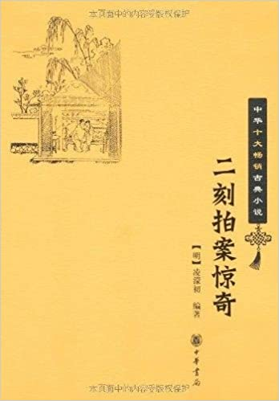

卷三十八两错认莫大姐私奔再成交杨二郎正本
卷三十八两错认莫大姐私奔再成交杨二郎正本#

李代桃僵，羊易牛死。
世上冤情，最不易理。
话说宋时南安府大庾县有个吏典黄节，娶妻李四娘。四娘为人心性风月，好结识个把风流子弟，私下往来。向与黄节生下一子，已是三岁了，不肯收心，只是贪淫。一日黄节因有公事，住在衙门中了十来日。四娘与一个不知姓名的奸夫说通了，带了这三岁儿子一同逃去。出城门不多路，那儿子见眼前光景生疏，啼哭不止。四娘好生不便，竟把儿子丢弃在草中，自同奸夫去了。大庾县中有个手力人李三，到乡间行公事，才出城门，只听得草地里有小儿啼哭之声，急往前一看，见是一个小儿眠在草里，擂天倒地价哭。李三看了心中好生不忍，又不见一个人来睬他，不知父母在那里去了。李三走去抱扶着他，那小儿半日不见了人，心中虚怯，哭得不耐烦，今见个人来偎傍，虽是面生些，也倒忍住了哭，任凭他抱了起来。元来这李三不曾有儿女，看见欢喜。也是合当有事，道是天赐与他小儿，一径的抱了回家。家人见孩子生得清秀，尽多快活，养在家里，认做是自家的了。
这边黄节衙门中出来，回到家里，只见房阔寂静，妻子多不见了。骇问邻舍，多道是“押司出去不多日，娘子即抱着小哥不知那里去了，关得门户寂悄悄的。我们只道到那里亲眷家去，不晓得备细。”黄节情知妻四娘有些毛病的，着了忙，各处亲眷家问，并无下落。黄节只得写下了招了，各处访寻，情愿出十贯钱做报信的谢礼。
一日，偶然出城数里，恰恰经过李三门首。那李三正抱着这拾来的儿子，在那里与他作耍。黄节仔细一看，认得是自家的儿子，喝问李三道：“这是我的儿子，你却如何抱在此间！我家娘子那里去了？”李三道：“这儿子吾自在草地上拾来的，那晓得甚么娘子？”黄节道：“我妻子失去，遍贴招示，谁不知道！今儿子既在你处，必然是你作奸犯科，诱藏了我娘子，有甚么得解说？”李三道“我自是拾得的，那知这些事？”黄节扭住李三，叫起屈来，惊动地方邻里，多走将拢来。黄节告诉其事，众人道：“李三元不曾有儿子，抱来时节实是有些来历不明，却不知是押司的。”黄节道：“儿子在他处了，还有我娘子不见，是他一同拐了来的。”众人道：“这个我们不知道。”李三发极道：“我那见甚么娘子？那日草地上，只见得这个孩子在那里哭，我抱了回家。今既是押司的，我认了悔气，还你罢了，怎的还要赖我甚么娘子！”黄节道：“放你娘的屁！是我赖你？我现有招贴在外的，你这个奸徒，我当官与你说话！”对众人道：“有烦列位与我带一带，带到县里来。事关着拐骗良家子女，是你地方邻里的干系，不要走了人！”李三道：“我没甚欺心事，随你去见官，自有明白，一世也不走。”
黄节随同了众人押了李三，抱了儿子，一直到县里来。黄节写了纸状词，把上项事一一禀告县官。县官审问李三。李三只说路遇孩子抱了归来是实，并不知别项情由。县官道：“胡说！他家不见了两个人，一个在你家了，这一个又在那里？这样奸诈，不打不招。”遂把李三上起刑法来，打得一佛出世，二佛生天，只不肯招。那县里有与黄节的一般吏典二十多个，多护着吏典行里体面，一齐来跪禀县官，求他严行根究。县官又把李三重加敲打，李三当不过，只得屈招道“因为家中无子，见黄节妻抱了儿子在那里，把来杀了，盗了他儿子回来，今被捉获，情愿就死。”县官又问“尸首今在何处？”李三道：“恐怕人看见，抛在江中了。”县官录了口词，取了供状，问成罪名，下在死囚牢中了，分付当案孔目做成招状，只等写完文卷，就行解府定夺。孔目又为着黄节把李三狱情做得没些漏洞，其时乃是绍兴十九年八月二十九日。文卷已完，狱中取出李三解府，系是杀人重犯，上了镣时，戴了木枷，跪在庭下，专听点名起解。忽然阴云四合，空中雷电交加，李三身上枷钮尽行脱落。霹雳声，掌案孔目震死在堂上，二十多个吏典头上吏中，皆被雷风掣去。县官惊得浑身打颤，须臾性定，叫把孔目身尸验看，背上有朱红写的“李三狱冤”四个篆字。县官便叫李三问时，李三兀自痴痴地立着，一似失了魂的，听得呼叫，然后答应出来。县官问道：“你身上枷钮，适才怎么样解了的？”李三道：“小人眼前昏黑，犹如梦里一般，更不知一些甚么，不晓得身上枷钮怎地脱了。”县官明知此事有冤，遂问李三道：“你前日孩子果是怎生的？”李三道：“实实不知谁人遗下，在草地上啼哭，小人不忍，抱了回家。至于黄节夫妻之事，小人并不知道，是受刑不过屈招的。”县官此时又惊又悔道：“今日看起来，果然与你无干。”当时遂把李三释放，叫黄节与同差人别行寻缉李四娘下落。后来毕竟在别处地方寻获，方知天下事专在疑似之间冤枉了人。这个李三若非雷神显灵，险些儿没辨白处了。而今说着国朝一个人也为妻子随人走了，冤屈一个邻舍往来的，几乎累死，后来却得明白，与大庾这件事有些仿佛。待小子慢慢说来，便知端的。
佳期误泄桑中约，好事讹牵月下绳。
只解推原平日状，岂知局外有翻更？
话说北直张家湾有个居民，姓徐名德，本身在城上做长班。有妻莫大姐，生得大有容色，且是兴高好酒，醉后就要趁着风势撩拨男子汉，说话勾搭。邻舍有个杨二郎，也是风月场中人，年少风流，闲荡游耍过日，没甚根基。与莫大姐终日调情，你贪我爱，弄上了手，外边人无不知道。虽是莫大姐平日也还有个把梯己人往来，总不如与杨二郎过得恩爱。况且徐德在衙门里走动，常有个月期程不在家里，杨二郎一发便当，竟象夫妻一般过日。后来徐德挣得家事从容了，衙门中寻了替身，不消得日日出去，每有时节歇息在家里，渐渐把杨二郎与莫大姐光景看了些出来。细访邻里街访，也多有三三两两说话。徐德一日对莫大姐道：“咱辛辛苦苦了半世，挣得有碗饭吃了，也要装些体面，不要被外人笑话便好。”莫大姐道：“有甚笑话？”徐德道：“钟不扣不鸣，鼓不打不响，欲人不知，莫若不为。你做的事，外边那一个不说的？你瞒咱则甚？咱叫你今后仔细些罢了。“莫大姐被丈夫道着海底眼，虽然撒娇撒痴，说了几句支吾门面说话，却自想平日忒做得渗濑，晓得瞒不过了，不好十分强辨得。暗地忖道：“我与杨二郎交好，情同夫妻，时刻也闲不得的。今被丈夫知道，必然防备得紧，怎得象意？不如私下与他商量，卷了些家财，同他逃了去他州外府，自由自在的快活，岂不是好！”藏在心中。
一日看见徐德出去，便约了杨二郎密商此事。杨二郎道：“我此间又没甚牵带，大姐肯同我去，要走就走。只是到外边去，须要有些本钱，才好养得口活。”莫大姐道：“我把家里细软尽数卷了去，怕不也过几时？等住定身子，慢慢生发做活就是。”杨二郎道：“这个就好了。一面收拾起来，得便再商量走道儿罢了。”莫大姐道：“说与你了，待我看着机会，拣个日子，悄悄约你走路。你不要走漏了消息。”杨二郎道：“知道。”两个趁空处又做了一点点事，千分万付而去。
徐德归来几日，看见莫大姐神思撩乱，心不在焉的光景，又访知杨二郎仍来走动，恨着道：“等我一时撞着了，怕不斫他做两段！”莫大姐听见，私下教人递信与杨二郎，目下切不要到门前来露影。自此杨二郎不敢到徐家方近来。莫大姐切切在心，只思量和他那里去了便好，已此心不在徐家，只碍着丈夫一个是眼中钉了。大凡女人心一野，自然七颠八倒，如痴如呆，有头没脑，说着东边，认着西边，没情没绪的。况且杨二郎又不得来，茶里饭里多是他，想也想痴了。因是闷得不耐烦，问了丈夫，同了邻舍两三个妇女们约了要到岳庙里烧一位香。此时徐德晓得这婆娘不长进，不该放他出去才是。却是北人直性，心里道：“这几时拘系得紧了，看他恍恍惚惚，莫不生出病来。便等他外边去散散。”北方风俗，女人出去，只是自行，男子自有勾当，不大肯跟随走的。当下莫大姐自同一伙女伴带了纸马酒盒，抬着轿，飘飘逸逸的出门去了。只因此一去，有分交：
闰中佚女，竟留烟月之场；枕上情人，险作囹固之鬼。直待海清终见底，方令盆覆得还光。
且说齐化门外有一个倬峭的子房，姓郁名盛。生性淫荡，立心刁钻，专一不守本分，勾搭良家妇女，又喜讨人便宜，做那昧心短行的事。他与莫大姐是姑勇之亲，一向往来，两下多有些意思，只是不曾得便，未上得手。郁盛心里道是一桩欠事，时常记念的。一日在自己门前闲立，只见几乘女轿抬过，他窥头探脑去看那轿里抬的女眷，恰好轿帘隙处，认得是徐家的莫大姐。看了轿上挂着纸钱，晓得是岳庙进香，又有闲的挑着盒担，乃是女眷们游耍吃酒的。想道：“我若厮赶着他们去，闲荡一番，不过插得些寡趣，落得个眼饱，没有实味。况有别人家女眷在里头，便插趣也有好些不便，不若我整治些酒馔在此等莫大姐转来。我是亲眷人家，邀他进来，打个中火，没人说得。亦且莫大姐尽是贪杯高兴，十分有情的，必不推拒。那时趁着酒兴营勾他，不怕他不成这事。好计，好计！”即时奔往闹热胡同，只拣可口的鱼肉荤肴、榛松细果，买了偌多，撮弄得齐齐整整。
正是：
安排扑鼻芳香饵，专等鲸鲵来上钩。
却说莫大姐同了一班女伴到庙里烧过了香，各处去游耍，挑了酒盒，野地上随着好坐处，即便摆着吃酒。女眷们多不十分大饮，无非吃下三数杯，晓得莫大姐量好，多来劝他。莫大姐并不推辞，拿起杯来就吃就干，把带来的酒吃得磬尽，已有了七八分酒意。天色将晚，然后收拾家火上轿抬回。回至郁家门前，郁盛瞧见，忙至莫大姐轿前施礼道：“此是小人家下，大姐途中口渴了，可进里面告奉一茶。”莫大姐醉眼朦胧，见了郁盛是表亲，又是平日调得情惯的，忙叫住轿，走出轿来与郁盛万福道：“元来哥哥住在这里。”郁盛笑容满面道：“请大姐里面坐一坐去。”莫大姐带着酒意，踉踉跄跄的跟了进门。别家女轿晓得徐家轿子有亲眷留住，各自先去了，徐家的轿夫住在门口等候。
莫大姐进得门来，郁盛邀至一间房中，只见酒果肴馔，摆得满桌。莫大姐道：
“甚么道理要哥哥这们价费心？”郁盛道：“难得大姐在此经过，一杯淡酒，聊表寸心而已。”郁盛是有意的，特地不令一个人来代侍，只是一身陪着，自己斟酒，极尽殷勤相劝。正是：
茶为花博士，酒是色媒人。
莫大姐本是已有酒的，更加郁盛慢橹摇船捉醉鱼，腼腆着面庞央求不过，又吃了许多。酒力发作，乜斜了双眼，淫兴勃然，倒来丢眼色，说风话。郁盛挨在身边同坐了，将着一杯酒你呷半口，我呷半口。又噙了一口勾着脖子度将过去，莫大姐接来咽下去了，就把舌头伸过口来，郁盛咂了一回。彼此春心荡漾，偎抱到床中，褪下小衣，弄将起来。
一个醉后掀腾，一个醒中摩弄。醉的如迷花之梦蝶，醒的似采蕊之狂峰。醉的一味兴浓，担承愈勇；醒的半兼趣胜，玩视偏真。此贪彼爱不同情，你醉我醒皆妙境。
两人战到间深之处，莫大姐不胜乐畅，口里哼哼的道：“我二哥，亲亲的肉，我一心待你，只要同你一处去快活了罢！我家天杀的不知趣，又来拘管人，怎如得二哥这等亲热有趣？”说罢，将腰下乱颠乱耸，紧紧抱住郁盛不放，口里只叫“二哥亲亲”。元来莫大姐醉得极了，但知快活异常，神思昏迷，忘其所以，真个醉里醒时言，又道是酒道真性，平时心上恋恋的是杨二郎，恍恍惚惚，竟把郁盛错认。干事的是郁盛，说的话多是对杨二郎的话。郁盛原晓得杨二郎与他相厚的，明明是醉里认差了。郁盛道：“叵耐这浪淫妇，你只记得心上人，我且将计就计，餂他说话，看他说甚么来？”就接口道：“我怎生得同你一处去快活？”莫大姐道：“我前日与你说的，收拾了些家私，和你别处去过活，一向不得空便。今秋分之日，那天杀的进城上去，有那衙门里勾当，我与你趁那晚走了罢。”郁盛道：“走不脱却怎么？”莫大姐道：“你端正下船儿，一搬下船，连夜摇了去。等他城上出来知得，已此赶不着了。”郁盛道：“夜晚间把甚么为暗号？”莫大姐道：“你只在门外拍拍手掌，我里头自接应你。我打点停当好几时了，你不要错过。”口里糊糊涂涂，又说好些，总不过肉麻说话，郁盛只拣那几句要紧的，记得明明白白在心。须臾云收雨散，莫大姐整一整头髻，头眩眼花的走下床来。郁盛先此已把酒饭与轿夫吃过了，叫他来打着轿，挽扶着莫大姐上轿去了。郁盛回来，道是占了采头，心中欢喜，却又得了他心腹里的话，笑道：“诧异，诧异，那知他要与杨二郎逃走，尽把相约的事对我说了。又认我做了杨二郎，你道好笑么？我如今将错就错，雇下了船，到那晚剪他这绺，落得载他娘在别处受用几时，有何不可？”郁盛是个不学好的人，正挠着的痒处，以为得计。一面料理船只，只等到期行事，不在话下。
且说莫大姐归家，次日病了一日酒，昨日到郁家之事，犹如梦里，多不十分记得，只依稀影响，认做已约定杨二郎日子过了，收拾停当，只待起身。岂知杨二郎处虽曾说过两番，晓得有这个意思，反不曾精细叮咛得，不做整备的。到了秋分这夜，夜已二鼓，莫大姐在家里等候消息。只听得外边拍手响，莫大姐心照，也拍拍手开门出去。黑影中见一个人在那里拍手，心里道是杨二郎了。急回身进去，将衣囊箱笼，逐件递出，那人一件件接了，安顿在船中。莫大姐恐怕有人瞧见，不敢用火，将房中灯打灭了，虚锁了房门，黑里走出。那人扶了上船，如飞把船开了。船中两个多是低声细语，况是慌张之际，莫大姐只认是杨二郎，急切辨不出来。莫大姐失张失志，历碌了一日，下得船才心安。倦将起来，不及做甚么事，说得一两句话，那人又不十分回答。莫大姐放倒头，和衣就睡着了去。
比及天明，已在潞河，离家有百十里了。撑开眼来看那舱里同坐的人，不是杨二郎，却正是齐化门外的郁盛。莫大姐吃了一惊道：“如何却是你？”郁盛笑道：“那日大姐在岳庙归来途中，到家下小酌，承大姐不弃，赐与欢会。是大姐亲口约下我的，如何倒吃惊起来？”莫大姐呆了一回，仔细一想，才省起前日在他家吃酒，酒中淫媾之事，后来想是错认，把真话告诉了出来。醒来记差，只说是约下杨二郎了，岂知错约了他？今事已至此，说不得了，只得随他去。只是怎生发付杨二郎呵？因问道：“而今随着哥哥到那里去才好？”郁盛道：“临清是个大马头去处，我有个主人在那里，我与你那边去住了，寻生意做。我两个一窝儿作伴，岂不快活？”莫大姐道：“我衣囊里尽有些本钱，哥哥要营运时，足可生发度日的。”郁盛道：“这个最好。”从此莫大姐竟同郁盛到临清去了。
话分两头。且说徐德衙门公事已毕，回到家里，家里悄没一人，箱笼什物皆已搬空。徐德骂道：“这歪刺姑一定跟得奸夫走了！”问一问邻舍，邻舍道：“小娘子一个夜里不知去向。第二日我们看见门是锁的了，不晓得里面虚实。你老人家自想着，无过是平日有往来的人约的去。”徐德道：“有甚么难见处？料只在杨二郎家里。”邻舍道：“这猜得着，我们也是这般说。”徐德道：“小人平日家丑须瞒列位不得。今日做出事来，眼见得是杨二郎的缘故。这事少不得要经官，有烦两位做一敝见证。而今小人先到杨家去问一问下落，与他闹一场则个。”邻舍道：“这事情那一个不知道的？到官时，我们自然讲出公道来。”徐德道：
“有劳，有劳。”当下一忿之气，奔到杨二郎家里。恰好杨二郎走出来，徐德一把扭住道：“你把我家媳妇子拐在那里去藏过了？”杨二郎虽不曾做这事，却是曾有这话关着心的，骤然闻得，老大吃惊，口里嚷道：“我那知这事，却来赚我！”徐德道：“街访上那一个不晓得你营勾了我媳妇子？你还要赖哩！我与你见官去，还我人来！”杨二郎道：“不知你家嫂子几时不见了，我好耽耽在家里，却来问我要人，就见官，我不相干！”徐德那听他分说，只是拖住了交付与地方，一同送到城上兵马司来。
徐德衙门情熟，为他的多，兵马司先把杨二郎下在铺里。次日，徐德就将奸拐事情，在巡城察院衙门告将下来，批与兵马司严究。兵马审问杨二郎，杨二郎初时只推无干。徐德拉同地方，众一证他有好，兵马喝叫加上刑法。杨二郎熬不过，只得招出平日通奸往来是实。兵马道：“奸情既真，自然是你拐藏了。”杨二郎道：“只是平日有好，逃去一事，委实与小的无涉。”兵马又唤地方与徐德问道：“他妻子莫氏还有别个奸夫么？”徐德道：“并无别人，只有杨二郎好稔是真。”地方也说道：“邻里中也只晓杨二郎是奸夫，别一个不见说起。”兵马喝杨二郎道：“这等还要强辨！你实说拐来藏在那里？”杨二郎道：“其实不在小的处，小的知他在那里？”兵马大怒，喝叫重重夹起，必要他说。杨二郎只得又招道：“曾与小的商量要一同逃去，这说话是有的。小的不曾应承，故此未约得定，而今却不知怎的不见了。”兵马道：“既然曾商量同逃，而今走了，自然知情。他无非私下藏过，只图混赖一时，背地里却去奸宿。我如今收在监中，三日五日一比，看你藏得到底不成！”遂把杨二郎监下，隔几日就带出鞫问一番。杨二郎只是一般说话，招不出人来。徐德又时时来催禀，不过做杨二郎屁股不着，打得些屈棒，毫无头绪。杨二郎正是俗语所云：
从前作事，没兴齐来，
鸟狗吃食，白狗当灾。
杨二郎当不过屈打，也将霹诬枉禁事情在上司告下来，提到别衙门去问。却是徐德家里实实没了人，奸情又招是真的。不好出脱得他。有矜疑他的，教他出了招贴，许下赏钱，募人缉访。然是十个人内倒有九个说杨二郎藏过了是真的，那个说一声其中有冤枉？此亦是杨二郎淫人妻女应受的果报。
女色从来是祸胎，奸淫谁不惹非灾？
虽然逃去浑无涉，亦岂无端受枉来？
且不说这边杨二郎受累，累年不决的事。再表郁盛自那日载了莫大姐到了临清地方，赁间闲房住下，两人行其淫乐，混过了几时。莫大姐终久有这杨二郎在心里，身子虽现随着郁盛，毕竟是勉强的，终日价没心没想，哀声叹气。郁盛起初绸缪相处了两个月，看看两下里各有些嫌憎，不自在起来。郁盛自想道：“我目下用他的，带来的东西须有尽时，我又不会做生意，日后怎生结果？况且是别人的妻小，留在身边，到底怕露将出来，不是长便。我也要到自家里去的，那里守得定在这里？我不如寻个主儿卖了他。他模样尽好，到也还值得百十两银子。我得他这些身与他身边带来的许多东西，也尽勾受用了。”打听得临清渡口驿前乐户魏妈妈家里养许多粉头，是个兴头的鸨儿，要的是女人。寻个人去与他说了。魏妈只做访亲来相探望，看过了人物，还出了八十两价钱，交兑明白，只要抬人去。郁盛哄着莫大姐道：“这魏妈妈是我家外亲，极是好情分。你我在此异乡，图得与他做个相识，往来也不寂寞。魏妈妈前日来望过了你，你今日也去还拜他一拜才是。”莫大姐女眷心性，巴不得寻个头脑外边去走走的。见说了，即便梳妆起来。
郁盛就去雇了一乘轿，把莫大姐竟抬到魏妈家里。莫大姐看见魏妈妈笑嘻嘻相头相脚，只是上下看觑，大刺刺的不十分接待。又见许多粉头在面前，心里道：
“甚么外亲？看来是个行院人家了。”吃了一杯茶，告别起身。魏妈妈笑道：“你还要到那里去？”莫大姐道：“家去。”魏妈妈道：“还有甚么家里？你已是此间人了。”莫大姐吃一惊道：“这怎么说？”魏妈妈道：“你家郁官儿得了我八十两银子，把你卖与我家了。”莫大姐道：“那有此话！我身子是自家的，谁卖得我！”魏妈妈道：“甚么自家不自家？银子已拿得去了，我那管你！”莫大姐道：“等我去和那天杀的说个明白！”魏妈妈道：“此时他跑自家的道儿，敢走过七八里路了，你那里寻他去？我这里好道路，你安心住下了罢，不要讨我杀威棒儿吃！”莫大姐情知被郁盛所赚，叫起撞天屈来，大哭了一场。魏妈妈喝住只说要打，众粉头做好做歉的来劝住。莫大姐原是立不得贞节牌坊的，到此地位，落了圈套，没计奈何，只得和光同尘，随着做娼妓罢了。此亦是莫大姐做妇女不学好应受的果报。
妇女何当有异图？贪淫只欲闪亲夫。
今朝更被他人闪，天报昭昭不可诬。
莫大姐自从落娼之后，心里常自想道：“我只图与杨二郎逃出来快活，谁道醉后错记，却被郁盛天杀的赚来，卖我在此。而今不知杨二郎怎地在那里，我家里不见了人，又不知怎样光景？”时常切切于心。有时接着相投的孤老，也略把这些前因说说，只好感伤流泪，那里有人管他这些唠叨？光阴如箭，不觉已是四五个年头。一日，有一个客人来嫖宿饮酒，见了莫大姐，目不停瞬，只管上下瞧觑。莫大姐也觉有些面染，两下疑惑。莫大姐开口问道：“客官贵处？”那客人道：“小子姓幸名逢，住居在张家湾。”莫大姐见说：“张家湾”三字，不觉潸然泪下，道：“既在张家湾，可晓得长班徐德家里么？”幸客惊道：“徐德是我邻人，他家里失去了嫂子几年。适见小娘子面庞有些厮象，莫不正是徐嫂子么？”莫大姐道：“奴正是徐家媳妇，被人拐来坑陷在此。方才见客人面庞，奴家道有些认得，岂知却是日前邻舍幸官儿。”元来幸逢也是风月中人，向时看见莫大姐有些话头，也曾咽着干唾的，故此一见就认得。幸客道：“小娘子你在此不打紧，却害得一个人好苦。”莫大姐道：“是那个？”幸客道：“你家告了杨二郎，累了几年官司，打也不知打了多少，至今还在监里，未得明白。”莫大姐见说，好不伤心，轻轻对幸客道：“日里不好尽言，晚上留在此间，有句说话奉告。”
幸客是晚就与莫大姐同宿了。莫大姐悄悄告诉他，说委实与杨二郎有交，被郁盛冒充了杨二郎拐来卖在这里，从头至尾一一说了。又与他道：“客人可看平日邻舍面上，到家说知此事，一来救了奴家出去；二来说清了杨二郎，也是明功；三来吃了郁盛这厮这样大亏，等得见了天日，咬也咬他几口！”幸客道：“我去说，我去说。杨二郎、徐长班多是我一块土上人，况且贴得有赏单。今我得实，怎不去报？郁盛这厮有名刁钻，天理不容，也该败了。”莫大姐道：“须得密些才好。若漏了风，怕这家又把我藏过了。”幸客道：“只你知我知，而今见人再不要提起。我一到彼就出首便是。”两人商约已定。幸客竟自回转张家湾来见徐德道：“你家嫂子已有下落，我亲眼见了。”徐德道：“见在那里？”幸逢道：
“我替你同到官面前，还你的明白。”
徐德遂同了幸逢齐到兵马司来。幸逢当官递上一纸首状，状云：“首状人幸逢，系张家湾民，为举首略卖事。本湾徐德夫妻莫氏，告官未获。今逢目见本妇身在临清乐户魏鸨家，倚门卖奸。本妇称系市棍郁盛略卖在彼是的，贩良为娼，理合举首。所首是实。”兵马即将首状判准在案。一面申文察院，一面密差兵番拿获郁盛到官刑鞫。郁盛抵赖不过，供吐前情明白。当下收在监中，侯莫氏到时，质证定罪。随即奉察院批发明文，押了原首人幸逢与本夫徐德，行关到临清州，眼同认拘莫氏及买良为娼乐户魏鸨，到司审问，原差守提，临清州里即忙添差公人，一同行拘。一千人到魏家，好似瓮中捉查，手到拿来。临情州点齐了，发了批回，押解到兵马司来。杨二郎彼时还在监中，得知这事，连忙写了诉状，称是“与己无干，今日幸见天日”等情投递。兵马司准了，等候一同发落。
其时人犯齐到听审，兵马先唤莫大姐问他。莫大姐将郁盛如何骗他到临清，如何哄他卖娼家，一一说了备细。又唤魏鸨儿问道：“你如何买了良人之妇？”魏妈妈道：“小妇人是个乐户，靠那取讨娼妓为生。郁盛称说自己妻子愿卖，小妇人见了是本夫做主的，与他讨了，岂知他是拐来的？”徐德走上来道：“当时妻子失去，还带了家里许多箱笼资财去。今人既被获，还望追出赃私，给还小人。”莫大姐道：“郁盛哄我到魏家，我只走得一身去，就卖绝在那里。一应所有，多被郁盛得了，与魏家无干。”兵马拍桌道：“那郁盛这样可恶！既拐了人去奸宿了，又卖了他身了，又没了他资财，有这等没天理的！”喝叫重打。郁盛辨道：“卖他在娼家，是小人不是，甘认其罪。至于逃去，是他自跟了小人走的，非干小人拐他。”兵马问莫大姐道：“你当时为何跟了他走？不实说出来，讨拶！”莫大姐只得把与杨二郎有好认错了郁盛的事，一一招了。兵马笑道：“怪道你丈夫徐德告着杨二郎。杨二郎虽然屈坐了监几年，徐德不为全诬。莫氏虽然认错，郁盛乘机盗拐，岂得推故？”喝教把郁盛打了四十大板，问略贩良人军罪，押追带去赃物给还徐德。莫氏身价八十两，追出入官。魏妈买良，系不知情，问个不应罪名，出过身价，有几年卖奸得利，不必偿还。杨二郎先有奸情，后虽无干，也问杖赎释放宁家。幸逢首事得实，量行给赏。判断已明，将莫大姐发与原夫徐德收领。徐德道：“小人妻子背了小人逃出了几年，又落在娼家了，小人还要这滥淫妇做甚么！情愿当官休了，等他别嫁个人罢。”兵马道：“这个由你。且保领出去，自寻人嫁了他，再与你立案罢了。”
一干人众各到家里。杨二郎自思“别人拐去了，却冤了我坐了几年监，更待干罢。”告诉邻里，要与徐德厮闹。徐德也有些心怯，过不去，转央邻里和解。领里商量调停这事，议道：“总是徐德不与莫大姐完聚了。现在寻人别嫁，何不让与杨二郎娶了，消释两家冤仇？”与徐德说了。徐德也道负累了他，便依议也罢。杨二郎闻知，一发正中下怀，笑道：“若肯如此，便多坐了几时，我也永不提起了。”邻里把此意三面约同，当官禀明。兵马备知杨二郎顶缸坐监，有些屈衣里头，依地方处分，准徐德立了婚书让与杨二郎为妻，莫大姐称心象意，得嫁了旧时相识。因为吃过了这些时苦，也自收心学好，不似前时惹骚招祸，竟与杨二郎到了底。这莫非是杨二郎的前缘，然也为他吃苦不少了，不为美事。后人当以此为鉴。
枉坐囹固已数年，而今方得保蝉娟。
何如自守家常饭，不害官司不损钱？